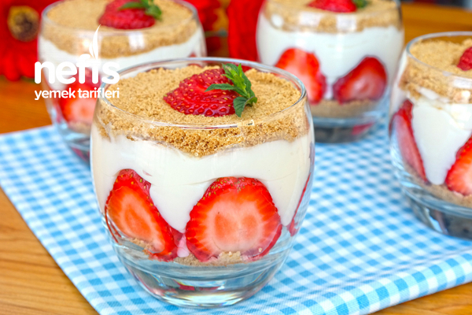

Magnolia tarifi arayanlar için enfes bir önerimiz var. Ünü New York pastanelerinden dünyaya yayıldıktan sonra, özellikle günümüzde popülerliği artan bu tatlıya, ülkemizde oldukça fazla ilgi gösteriliyor. Yapımında un, bebe bisküvisi, krema ve meyve kullanılıyor. Bu tarifin birbirinden farklı malzemeleri kullanarak yapılan çeşitleri bulunuyor. Peki çilekli magnolia tarifi nedir? Magnolia nasıl yapılır? Listemizde verilen malzemeleri hazırladıysanız, tarifin detaylarına geçebilirsiniz.
Malzemeler
-
5 su bardağı süt (1 litre)
-
4 yemek kaşığı un
-
100 ml krema (yarım kutu)
-
3/4 (bir yarım+bir çeyrek) su bardağı şeker
-
1 paket vanilya
-
1 adet yumurta
-
1 paket bebe bisküvisi (yulaflı diğer bisküviler de tercih edilebilir)
-
1 su bardağı fındık
-
Çilek